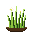
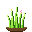

Three animated 32×32 takes on the meadow-grass tile, for picking a direction.
The game currently draws every tile procedurally (Canvas 2D, ~74 px) — no external image assets.
This page explores a hand-made pixel-art direction for the grass tile instead. All three are
looping animations; the idea is to pick one — or mix ideas between them — to pursue.
Nothing here is wired into the game engine; these are concepts only.
32×32animated GIF3 conceptsbase: Meadow Grassconcept only
01The three concepts
Each is a 16-frame looping wind-bend animation at native 32×32, shown here upscaled with nearest-neighbour so the
pixels stay crisp. The small frame under each hero shows the sprite at 2× (64 px) so you can judge how tiny
it actually is in-game. Hover a palette chip to see its hex.
V1 · painterly & cozy
Soft Meadow
Airy wild-meadow blades with a tiny wildflower.

actual size — 2× (64px) native 32px
Palette · 10 colors
16 frames · 80 ms / frame · 1.28 s loop (seamless)
Look
Thin, airy, gently-curved blades with soft shade transitions, a small white + yellow wildflower and a tiny bud, all on a rounded earth mound. The blades bend as supple cantilevers — rooted at the base, curving most toward the tip, which lags and whips back — and lean a little out of phase, so a gust seems to roll across the tuft; the wildflower rides its blade and bobs along.
Best for / trade-off
The most naturalistic, "wild meadow" feel — and closest in spirit to the current procedural tile (blades + wildflower). Trade-off: the thin blades read airier and less bold at very small sizes.
V2 · bold & readable
Clean 16-bit
Chunky outlined blades — instantly readable.
actual size — 2× (64px) native 32px
Palette · 7 colors
16 frames · 80 ms / frame · 1.28 s loop (seamless)
Look
Bold chunky blades (2–4 px) wrapped in a clean 1 px dark outline — both foliage and mound — with flat cel-shading and no flower. Each stiff blade bends from a rooted base with the tip lagging behind, the clump swaying a touch out of phase — crisp and readable.
Best for / trade-off
Maximum legibility and a classic SNES / Stardew game-tile look — instantly readable at 32 px. Trade-off: the most stylized, least naturalistic option; no floral detail.
V3 · lively & decorative
Whimsical
Lush tuft with blooms, dew & twinkling sparkles.

actual size — 2× (64px) native 32px
Palette · 11 colors
16 frames · 80 ms / frame · 1.28 s loop (seamless)
Look
A lush, bright tuft with a white + yellow daisy and a pink bloom, a pale-blue dew drop, and two phase-offset 4-point sparkles that twinkle at different times. The blades bend in the wind and the blooms ride the blade tips as they sway, so something is always shimmering or swaying.
Best for / trade-off
The most eye-catching, "alive" option — great for delight and juice. Trade-off: busiest at 32 px and the brightest palette; may need toning to sit in a muted UI.
02Side-by-side
The same three animations on identical backdrops at one large size for direct comparison — then again at 1×
native size, to compare their true in-game footprint.
Large · uniform scale (~200px)
V1 · Soft Meadow
V2 · Clean 16-bit
V3 · Whimsical
Actual size · 1× (32px) — true in-game footprint
V1 · 32px
V2 · 32px
V3 · 32px
Reading the 1× row. At native size the differences compress fast: V2's outline keeps it the most legible, V1 reads as a soft clump, and V3's sparkles and blooms are charming but the busiest. This is the size that matters for an actual board tile.
03Reference — the current grass tile
These concepts re-imagine Meadow Grass (tile_grass_meadow). In the live game it is
drawn procedurally at roughly 74×74, centred on a tile background and rooted on a soil ellipse,
and it upgrades toward hay_bundle.
Current Meadow Grass palette
What the procedural draw uses today, for comparison against the concept palettes above:
base #7fb24ablades dark #234012blades mid #5c9c2eblades hi #b6e068flower #fffbe0flower #ffd248soil #5a3a18
The grass-family tiles
Meadow Grass is one of four grass-family tiles, for context:
Tile key
Name
Base color
tile_grass_meadow
Meadow Grass
#7fb24a
tile_grass_hay
Hay
#a8c769
tile_grass_spiky
Spiky Grass
#9bb55a
tile_grass_heather
Heather
#7a4f8a
Resolution note. The concepts are 32×32 (as requested), while the game currently renders tiles at ~74 px. Adopting one would mean either using the pixel art upscaled with nearest-neighbour (the crisp pixel look) or redrawing it at higher resolution.